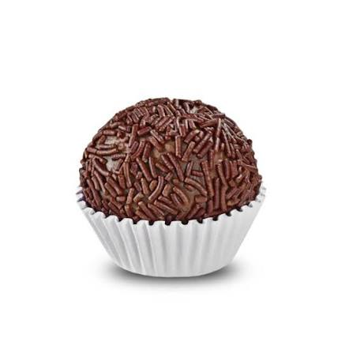
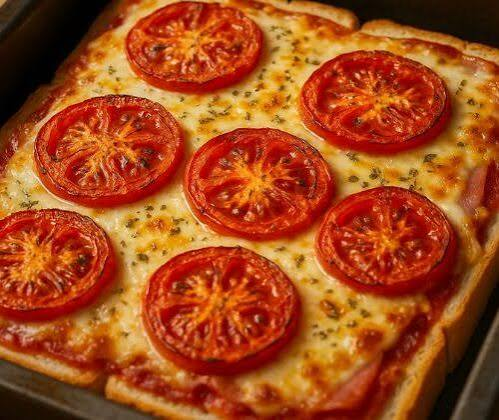
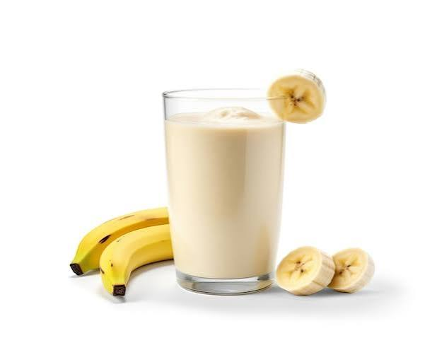

Brigadeiro

Ingredientes:
- 1 lata de leite condensado
- 2 colheres de chocolate em pó
- 1 colher de manteiga
- Granulado
Modo de preparo:
- Coloque o leite condensado, o chocolate e a manteiga em uma panela.
- Misture em fogo baixo até engrossar.
- Deixe esfriar.
- Faça bolinhas e passe no granulado.
Pão de forma

Ingredientes:
- 2 fatias de pão de forma
- Molho de tomate
- Queijo
- Presunto
- Orégano
Modo de preparo:
- Coloque as fatias de pão em uma forma.
- Passe o molho de tomate.
- Adicione o queijo e o presunto.
- Coloque orégano por cima.
- Leve ao forno até o queijo derreter.
Vitamina de Banana

Ingredientes:
- 1 banana
- 1 copo de leite
- 1 colher de açúcar
- Gelo a gosto
Modo de preparo:
- Coloque todos os ingredientes no liquidificador.
- Bata por alguns segundos.
- Coloque em um copo.
- Sirva gelado.